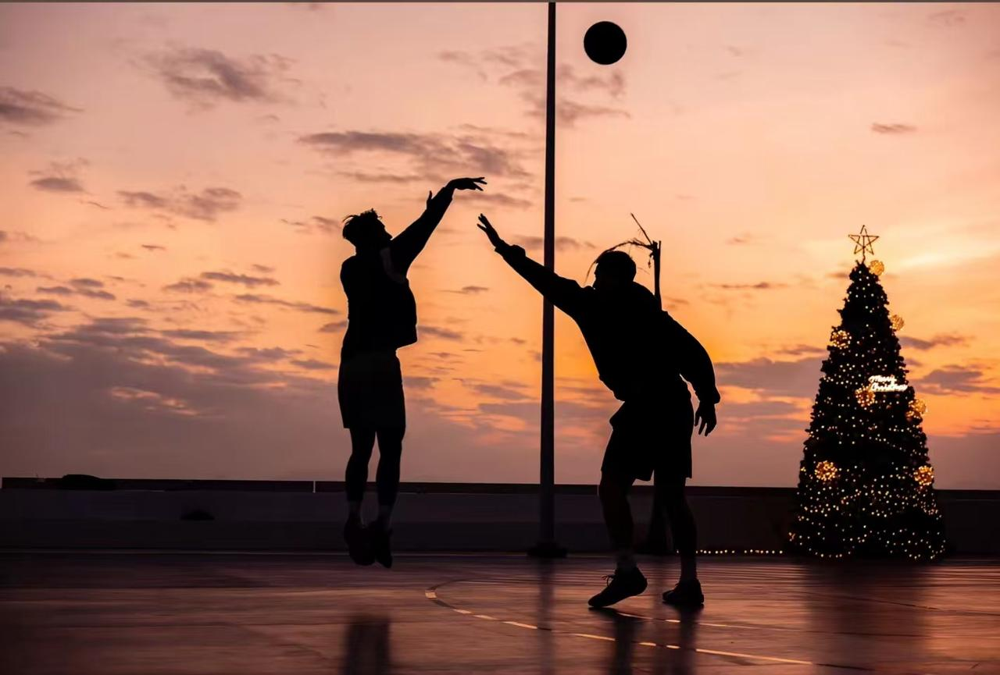

🏅荣誉
- 两次“四有”优秀士兵、两次嘉奖
- 班三等功
- 集体嘉奖
点击卡片，探索我的故事。08 PIECES OF ME

ABOUT ZU PENG
希望帮你能更好地了解我。
祖朋（也可以叫我"啊祖"）
2021年9月入伍 · 海军陆战队
广州软件学院毕业
5年海军陆战队服役，用任务与荣誉说话：
执行力：令行禁止、任务导向，交代的事必有回响
抗压能力：高强度训练都扛过来了，工作上的急难险重不在话下
团队协作：习惯把团队目标放在第一位，配合度高
自律与体能：作息规律、精力在线，扛得住节奏
雷厉风行，令行禁止；认准的事，干到底。5年军旅，把“扛事”刻进了骨子里。

足球、健身、游泳，球场上随时可以约球。
Beyond 的忠实听众，经典永流传。
东野圭吾推理小说爱好者，喜欢在细节里找真相。
带着军人的执行力把每件事做到位，同时把 AI 学深学透，做一个能扛事、跟得上时代的人。